Out-of-time (OOT) events are associated with any CCD instrument. In CCD instruments, events in each pixel are read by transferring those laterally from pixel to pixel (i.e., frame-transfer) before they reach either the read-out node or storing region, which has no sensitivity for photons in the energy band of interest.
In most of the cases, this transfer (into a reading region) takes much
shorter time than the actual exposure. However it still may take a
significant time. If there is a bright enough source(s), a
significant number of the photons from the source reach pixels during
this frame-transfer stage. These happen in the following procedure.
Suppose there is a single (bright) source with a flux of  [count/frame] (in the no-pileup situation) at a Y-axis position of
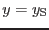, where the frame transfer is carried out in the
direction of negative Y-axis
[count/frame] (in the no-pileup situation) at a Y-axis position of
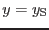, where the frame transfer is carried out in the
direction of negative Y-axis (towards 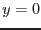) and the Y-axis in the imaging
area has 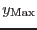 pixel. This frame is transferred into the
reading (non-exposed) area, which takes a time of 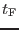. Now a
frame in the imaging area on the CCD is exposed for a given exposure,
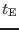. It is then transferred to the reading area. During this
transfer pixels at Y-axis positions between
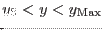 are inevitably exposed to the source with the total exposure of
(towards 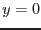) and the Y-axis in the imaging
area has 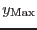 pixel. This frame is transferred into the
reading (non-exposed) area, which takes a time of 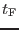. Now a
frame in the imaging area on the CCD is exposed for a given exposure,
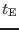. It is then transferred to the reading area. During this
transfer pixels at Y-axis positions between
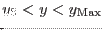 are inevitably exposed to the source with the total exposure of
| 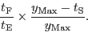 | (1) |
| 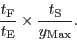 | (2) |
| 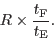 | (3) |
In the standard source detection scheme for EPIC in SAS (emldetect), this effect
is taken into account, based on the detected count rates. However if
a source is too bright and causes a significant pile-up, then the
count rate of the source ( in the above notation) is
underestimated, because the current source detection scheme works on
the basis that there is no pile-up. As a result any estimate of
parameters of the sources which are located at (or very close to) an
OOT event streak is likely to be wrong
in the above notation) is
underestimated, because the current source detection scheme works on
the basis that there is no pile-up. As a result any estimate of
parameters of the sources which are located at (or very close to) an
OOT event streak is likely to be wrong .
.
This task creates a mask image, which represents the OOT event streaks affected by significant pile-ups, if foroote=`yes'.